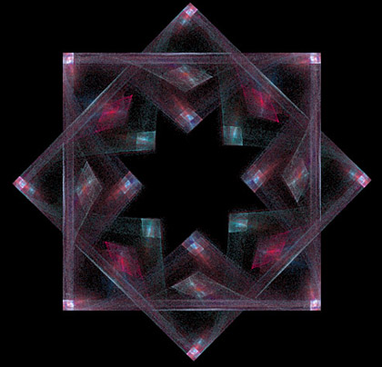

An Apophysis 2.05 beta Tutorial
All right. Variations. Variations are the heart and soul of Apophysis. They are the key to making strange, odd, and incredibly intricate fractals. This tutorial explains, in general, what variations are and how they work.